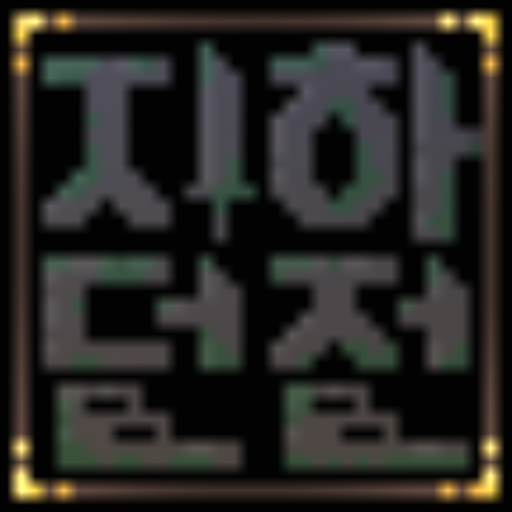
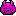
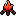
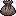
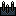
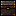
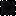
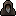
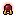

파스텔

지하던전
게임 플레이
선택의 공간에서 같은 모양이 가로로 나열되면 해당 모양이나 특수한 이벤트가 추가됩니다. 한 줄당 한 번만 가능합니다. 층을 이동하면 초기화됩니다.
저주받은 자의 각인을 제외한 각인은 엘리트, 보스몬스터와의 승리 시에만 능력치를 보상으로 얻을 수 있습니다.
전투에서 승리 시 일정 확률로 마석, 아이템을 얻을 수 있습니다.
스킬, 장비마석, 요정의 레벨이 올라감에 따라 추가되는 다른 특수능력은 없습니다.
게임플레이 중 왼쪽 상단 아이템 버튼을 눌러 나오는 아이템 목록에서 회복과 버프 등의 아이템이 사용 가능합니다.
같은 마석을 얻으면 레벨업이 가능합니다.
같은 아이템은 중첩이 가능합니다.
희귀 습득 확률은 기본적으로 층을 오를 때 마다 조금씩 상승합니다.
능력치의 상승과 감소에는 두가지 종류가 있습니다. 예를들어 '근력 +10'이 있고 '근력증가 +10%'가 있습니다. 전자는 근력이 20이라면 30으로 상승됩니다. 후자는 근력 20에 퍼센트로 적용되어 20의 10%인 2가 올라 22가 됩니다.
능력치
선악력
선악력은 빛대미지, 어둠대미지, 선악력기반회복에 영향을 끼칩니다. 빛대미지, 선악력기반회복은 선악력이 높을수록 높은위력을 내며 어둠대미지는 선악력이 음수로 클수록 위력이 올라갑니다. 선악력이 음수인데 빛대미지의 공격을 하면 자기 자신에게 대미지를 줍니다.
맷집
받는 대미지를 줄여줍니다. 최대 80% 까지 적용됩니다.
받는 대미지 증가, 주는 대미지 감소
받는 대미지 증가, 주는 대미지 감소는 최대 90% 까지 적용됩니다.
회피율
회피율은 명중률을 낮춥니다. 회피율은 최대 95%까지 적용됩니다.
간파
선택의 공간, 전투 등에서 보이지 않던 것을 보이게 해줍니다.
기절과 매혹
기절은 지속 턴 동안 행동을 할 수 없지만 매혹은 타격을 받을 때까지 행동을 할 수 없습니다.
개구리 변신
받는 대미지가 두 배가 되고 주는 대미지가 절반이 됩니다.
가시
공격 대상에게 고정대미지를 입힙니다. 자신한테 공격 할 경우 자신에게도 대미지가 적용됩니다.
기술 특성
신속
기술의 소모 행동력을 1 줄인다.
그림자
기술 사용 횟수를 1회 추가 한다.
자동
전투 시작 시 대기시간 증가 없이 기술을 자동으로 시전한다. 기습을 당하면 시전되지 않는다.
흡혈
공격 시 가한 대미지의 10%만큼 생명력을 회복한다.
약탈
기술이 적에게 적중하면 일정확률로 코어를 얻는다.
백발백중
명중률이 두배 상승한다.
선택의 공간
괴물
일반 괴물과 조우한다. 전투 승리 시 코어만 얻을 수 있다.

엘리트 괴물
엘리트 괴물과 조우한다. 전투 승리 시 코어와 함께 능력치를 얻는다.
기술마석
기술마석을 얻을 수 있다.
장비마석
장비마석을 얻을 수 있다.
악마와의 거래
패널티를 얻고 능력치를 얻는다.
마석재단
기술마석 또는 장비마석을 레벨업 시킬 수 있다. 스페셜 등급의 마석은 레벨을 올릴 수 없다.

휴식
생명력을 25% 회복한다. 아주 낮은 확률로 생명력 기반 독에 걸린다.
마석판매대
코어를 넣고 마석, 아이템을 뽑을 수 있다.

아이템
아이템을 얻을 수 있다.

함정
고정 피해를 받는다. 층을 올라갈수록 받는 대미지가 올라간다.
계단
층을 내려간다. 악마와 조우한다.
텅 빈 곳
아무 것도 없는 공간. 낮은 확률로 코어를 얻는다.

알 수 없는 상자
마석, 아이템을 얻거나 괴물과 조우하거나 능력치를 얻거나 잃거나 버프를 받거나 디버프를 받을 수 있다.

짙은어둠
어떤 선택이 나올지 모른다. 간파가 있을 경우 어떤 선택인지 알 수 있다.

이름 모를 노인
특수한 선택. 스페셜 등급의 마석 또는 아이템을 얻는다.

빛나는 구슬
특수한 선택. 기술마석에 능력을 부여한다.
작지만 밝은 빛
특수한 선택. 요정을 얻을 수 있다.